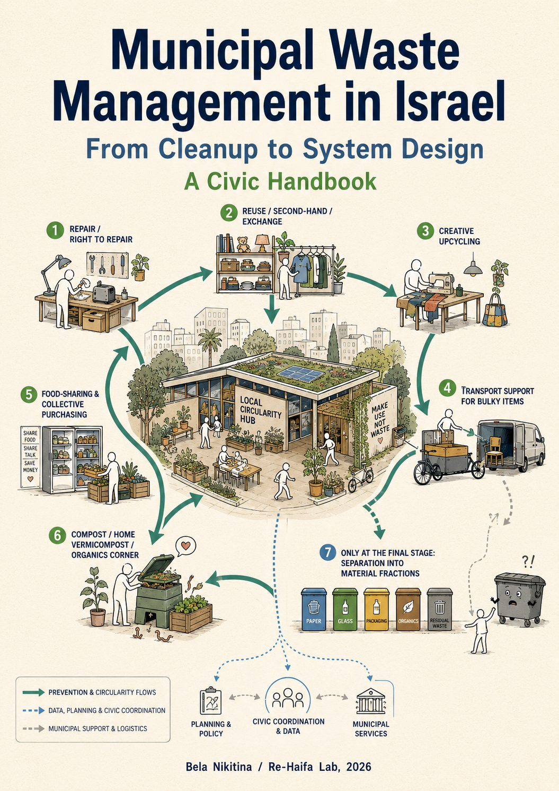

Waste Management School
Educational materials, civic tools and videos for activists and anyone who wants to understand Israel's waste management system.

Municipal Waste Management in Israel
From Cleanup to System Design
This civic handbook explains how municipal waste systems in Israel actually work — and how they can be changed rather than merely cleaned up.
Its central argument is that better waste management begins before waste is created: through local circularity hubs, repair, reuse, food-sharing, composting, bulky-item transport, public data and municipal accountability.
Using examples from Israel, with particular attention to Haifa and its agglomeration, the book connects everyday waste problems with the hidden systems behind them: contracts, tariffs, infrastructure, data, governance and reform.
Handbook Structure
The legal framework, the map of actors, and the infrastructure crisis that make waste policy in Israel a live political issue rather than a technical background service. The part begins with the legal definition of waste and municipal responsibility, then moves to the institutional actor map and to the urgent question of landfill capacity, WtE, infrastructure lock-in, and why civic engagement matters right now — literally, not rhetorically.
The physical route of waste from the kitchen, the yard and the bin site through trucks, transfer stations, sorting facilities, RDF, landfills and energy recovery. This part makes visible the “invisible middle” of the system and shows how collection routes, housing types, transfer infrastructure and geography shape both service quality and environmental burden — including who lives next to landfills, not by choice.
The evidence scale as a tool for separating documented facts from optimistic declarations. Six material streams are examined in detail — from paper and cardboard, where a relatively complete downstream chain exists, to flexible, multilayer and small packaging, which often enters the system already structurally difficult or impossible to recycle.
How TAMIR was designed, why it fell short, and what the Israeli case reveals about the limits of packaging-focused Extended Producer Responsibility. This part examines the deposit system, the failure to integrate parallel collection streams, the 2026 reform, the MoEP memorandum of November 2025, and the European PPWR as a possible but not automatically transferable model.
The financial architecture behind municipal waste services: gate fees, landfill levies, hidden subsidies, the “pay-twice” paradox, and the gap between who is legally responsible and who actually pays. This part explains why contracts often reward tonnes collected rather than residual waste reduced — and how KPIs, PAYT principles, data requirements and contract design could shift incentives from managing volume to reducing it.
Why waste prevention cannot be reduced to individual behaviour or occasional volunteer initiatives. Organics, food, clothing, furniture, toys and household items are treated here not simply as “waste streams,” but as materials that can be intercepted before they enter the waste system. The central idea is the neighbourhood circularity hub: a missing municipal layer between household life and formal waste collection, where repair, reuse, exchange, food-sharing, composting, bulky-item logistics, education and impact measurement are brought together into one working system.
The practical civic toolkit: what residents, NGOs and local groups have the right to ask, how to audit a waste stream without being experts, and how to turn observations into arguments. The book ends with a one-week action framework for working with municipalities, schools and NGOs, and for taking part in the reform process not as “free janitors,” but as informed civic actors capable of engaging with data, contracts and policy choices.
Read the full handbook
The complete PDF is available for reading and download. You can use it for civic learning, NGO work, municipal dialogue, study groups and environmental education.
Download the handbook ➜